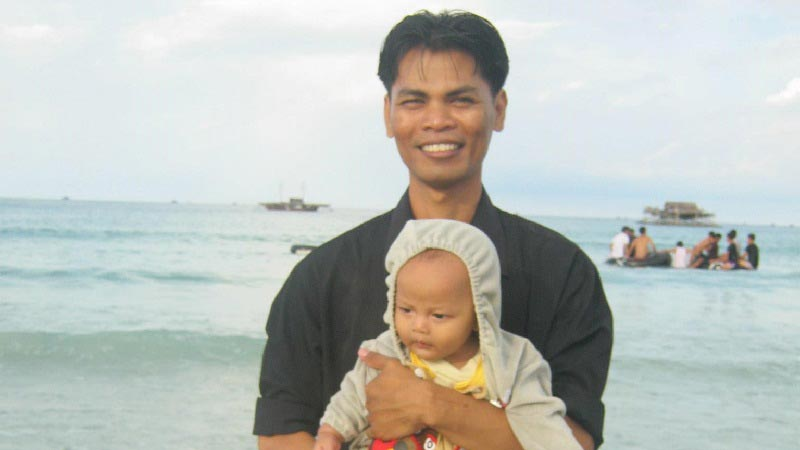
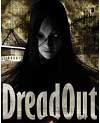
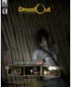
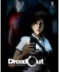
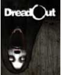
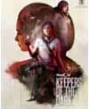
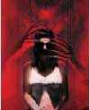

Dread Series Postmortem
BEKRAF Developer Day Batam
Dread Series Postmortem
post·mor·tem
noun
An examination of a dead body to determine the cause of death.
post·mor·tem
noun
An analysis or discussion of an event held soon after it has occurred,
especially in order to determine why it was a failure.
Dread Series Postmortem
• This is NOT a technical postmortem.
• It is a talk about our history, to inspire you.
• Hopefully we can learn a few things from it.
This talk is well correlated with other talks today.
You've learn:
• Game industry business
• How to start your studio
• How to monetize your game
Let's see now what your path might have been,
by telling you our journey so far.

Father of two kids
Love playing point & click games
e.g. DOOM, Quake, Counter-Strike,
addicted to Metal Gear Online.
@Digital Happiness
since the very beginning
Digital Happiness
- How many of you who knew about Digital Happiness?
- An Award Winning Game Development Studio
- Best Startup Company, Bubu Awards, 2013.
- Top 20 Rising Global Stars, Forbes ID, 2016.
- Initiated by two person (Rachmad Imron, Vadi Vanadi)
- and another two (Dwi Arif, Sukmadi Rafiuddin)
- that have no technical/programming skills (yet).
- So, what was holding you from creating your own? ;)
DreadOut
- Now, how many of you who knew about DreadOut?
- The 1st Indonesian Game that's approved by Steam.
- The 1st Indonesian's that's internationally crowdfunded.
- $29.067 USD raised (from $25.000 USD goal)
- The Best Selling Indonesian Game on Steam, so far.
- ~ 300k copies sold (DreadOut) [SteamSpy, 2018]
- ~ 150k copies sold (DreadOut: KOTD) [SteamSpy]
- ~ 452k copies sold across the series [SteamSpy]
- Your game will sold more, beating this record. Ameen!
Dread Series
|

TEST
2012 |

DEMO
2013 |

ACT1
2014 |

ACT2
2015 |

KOTD
2016 |

DEVR
2017 |
(new)
2018 |
|
Our game development was started in 2011 |
| but our paths were crossed a long long time before... |
| a long way back in our college days. |
Part One
How To Seed Your Game Development Studio
Easy! Just make a lot of friends.
| Especially those who love to play games. |
| Chances are they wanted to create games too. |
Digital Happiness, B.C.
- All of the initial members were from the same campus.
- We like to play games together, dated back to the early Quake days.
- We already dreaming about creating games.
- But there is no gamedev scene back then.
- No available gamedev tools to use either.
- No marketplace for indies beyond Shareware too.
Digital Happiness, B.C., cont.
- Back in the day, we don't know how to ... games!
- We start early. While we're still an active student ...
- We founded our each own Startup.
- Student Movement brought Angel Investors.
- We are self-taught, and so can you!
- It's easier now to self-teach thanks to the internet.
- Want to be certified? Dicoding Academy can help :)
- go to dicoding.com and choose your class!
Digital Happiness, B.C., fast forward 2004.
- Our 'Startup' collaborated on a game-like project.
- IRIS Design, by Rachmad Imron, produce it.
- MALAKA9, a company I co-found, develop it.
- To build a car driving simulation software and hardware.
- It was a huge challenge!
- The project requires a believable physics with correct force-feedback on the steering wheel.
- No Unity3D yet, Unreal Engine is no cheap, so
we build our own game & physics engine!
S.M.A.R.T.
Simulasi Mobil Aktif Real Time
This triggered back our urge to create
a video game!
Digital Happiness, B.C., fast forward 2010.
- Vadi Vanadi created Jurig Escape.
- Rachmad Imron coined Digital Happiness.
- Further split-up!
- I moved to Batam, doing freelance works.
- A fellow S.M.A.R.T. developer founded his startup.
- But don't worry, we'll be reunited later :)
- For now, just enjoy the great Escape! Are you ready?
Part Two
How To Start Your Game Development Studio
Easy! Just call your friends :)
| I mean it. It's easier than doing a recruitment! |
at the very least we can tell each other stories,
friends did that all the time didn't they? |
Digital Happiness, The Beginning.
- Jurig Escape gathered a positive response.
- It boosting our confidence.
- "We can create games that people love!"
- Initial team were assembled.
- But there is no fund for a proper salary.
- So, friends were called in.
- The idea is to iterate over Jurig Escape.
- To create a full game product to sell.
- Proper salary + bonus will follow sales.
Part Three
How To Create Your First Game
Just finish it.
Spoiler: It's HARD to create a finished game!
| Start SMALL. Focus on core mechanics first. |
Game Mechanics Development
- Small scoped development.
- Only do 1 or 2 levels/maps.
- Focus on core mechanics.
- Only do basic features unique to the game type.
- Player mirroring, criticize yourself.
- "Do I like to play this?"
- Love to work, but don't love your work!
- If it is a trash, throw it!
Game Mechanics Development, cont.
- Choose a working game mechanics.
- Weight in fun factor, uniqueness, and player base.
- Reference other games with similar mechanics.
- Its fan base can be your best investment.
- Complete it!
Part Four
Market-Test Your Game
Gauge your game potentials
Make a name for your game/team
Test-Game Development
- Create a playable game from player's perspective.
- Iterate over the choosen game mechanics.
- Show it to the world, spread the news.
- Attend game related events as much as you can.
- Let everyone to play, gather feedbacks.
- Create questionaires.
- Provide little merchandises for reward.
DH-2012: Test-Game Feedback Analysis
- People acknowledged our uniqueness.
- Indonesian ghosts & folklores.
- Players loved the night/dark level better.
- It is more scary that way.
- The game need to be variative.
- Players get bored after a while.
- The game is too short.
- Well, it's just a test, after all :)
Part Five
How To Fund Your Game
The Billionaire way: Use your own money
The People way: Search for investor!
| Create a fully functional, features complete, Game DEMO! |
DH-2012: DreadOut New Development Plan
- Develop a story arc.
- Still based on Indonesian ghosts & folklores.
- Implement more SFXs and background musics.
- We only use ambient background all this time.
- More levels and ghost enemies.
- Also need to add puzzles and quests.
- More weapons and items to use.
- Player need to solve puzzle to have some items.
DH-2012: Development Funding
- The team is divided into two groups.
- Gaming team, to develop the game.
- Commissioned project team, to support the dev.
- Looking for investors.
- But many investors seem to doubt our game.
- PC Game market is unknown to them.
- Try running a crowdfunding through indiegogo.com
- Need to create a complete game demo!
DH-2012: Demo Development
- Developed using Unity3D engine.
- Implement features from test feedbacks.
- More ghosts/enemies variation.
- Adding puzzle quests and items.
- Art assets improvements.
- Adding support for social media sharing.
- Allow players to upload screenshot to Facebook.
Part Six
How To Publish Your First Game
Self Publishing
Using a Publisher
| Create a fully functional, playable, Game! |
DH-2013: DreadOut Funding & Publishing
- We decided to Self Publish.
- Lucky for us, VALVE introduced Steam Greenlight.
- Indie developer can submit their games.
- Steam users will then vote the games.
- Top voted games are allowed to be sold on Steam.
- We run the campaign in parallel with crowdfunding.
- To secure development fund and market channel.
- We ended up both campaign with success!
DH-2013: DreadOut New Development
- With both campaign ended with success, we run our game development full throtle.
- To fulfill our promise to the game backers.
- We're trying to adopt better development practice.
- We brought Agile Methodology to the team.
- To enable faster development iteration.
- We set up a better development infrastructure.
- We run Subversion server to keep track changes,
- and using Trac for tasking & reporting
DH-2013: DreadOut Split
- We underestimated our initial game design.
- Time is too short to keep our promise.
- To release the full finished game.
- We decided to release the game as an episodic.
- After we consulted our backers.
- The current finished state will be released as ACT1.
- The rest will be released as ACT2.
- The DEMO is rebranded as ACT0.
Part Seven
How To Live Up To User Expectation
Know Your Self
Cut The Impossible
DH-2014: DreadOut ACT2 Development
- With prior experience, we cut some part of the game.
- It will be released later to complement the story.
- We redevelop our game framework.
- To have better support for language localization.
- To integrate all ACTs into one game.
- Related to Steam publishing technicalities.
- We upgraded engine, server and related softwares.
Part Eight
How To Capitalize On Your New IP
Create Sequels
Maintain The Core
DH-2015: Keepers Of The Dark Development
- Basically we develop what we left in the original design.
- As stated before, built to complement the story.
- We redevelop yet another new game framework.
- To implement new game design direction.
- Developed by a smaller team
- The other team did another game and research.
- This is our fastest and smoothest development.
- Team members are already familiar with our tools.
Part Nine
How To Embrace New Technology
Acquire The Expertise
Make Use Developer Relation
| If possible, ask the vendor to fund your development cost |
DH-2016: DreadEye VR Development
- Actually, we did VR research since Oculus DK1 days.
- Dated back to June, 2013, when our DK1 arrived.
- when we are still developing DreadOut.
- We did initial research in Unity.
- We switched to Unreal Engine 4 for the final game.
- We created few spin-offs to fund the development.
- Basically some vendor specific product/bundle.
Dread Series Concluded
|
TEST
2012 |
DEMO
2013 |
ACT1
2014 |
ACT2
2015 |
KOTD
2016 |
DEVR
2017 |
(new)
2018 |
|
We succesfully released a game each year! |
| With the complexity and scope of our titles, it is an acomplishment. |
| Note: During this time, we're also creating many other products as well. |
| Sometimes two/more projects even running in parallel. |
What's Next?
I can't discuss our 2018 project yet :p
But we're striving for creating the best game experience possible
Researching new technologies. Creating new tools.
Better management. Simplify our workflows, etc. |
The Takeaways
Embrace
Start Now
Ship It!
Learn & Share
Any Questions?
twitter.com/stricmp
facebook.com/stricmp
steamcommunity.com/id/stricmp
stricmp@gmail.com